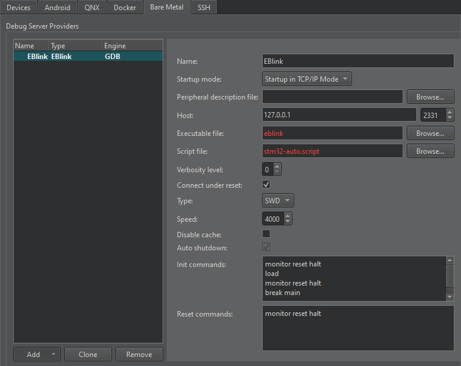
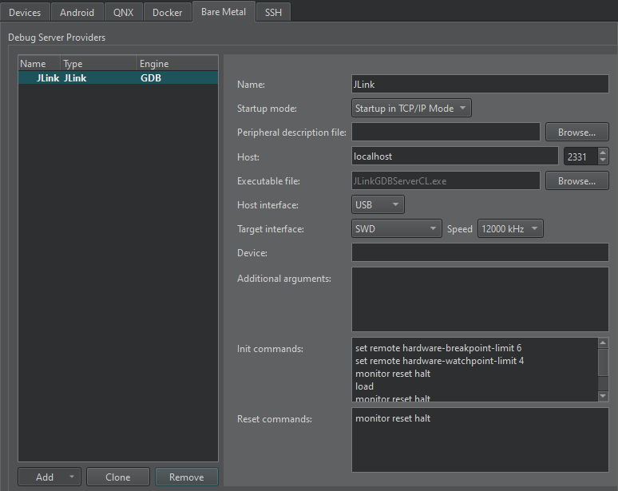
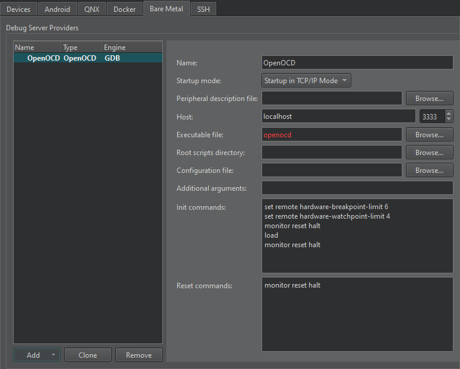
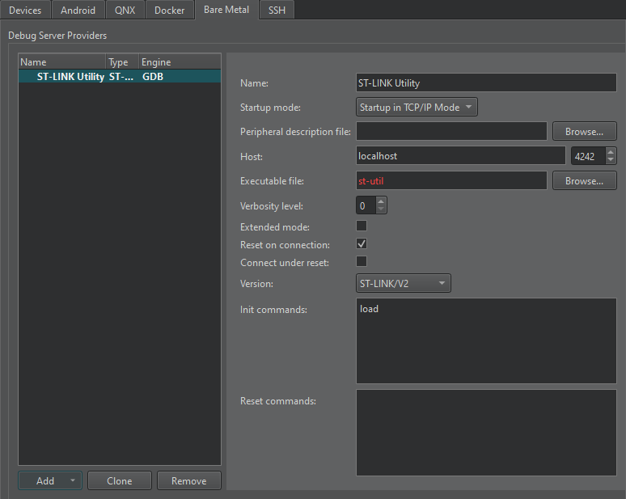
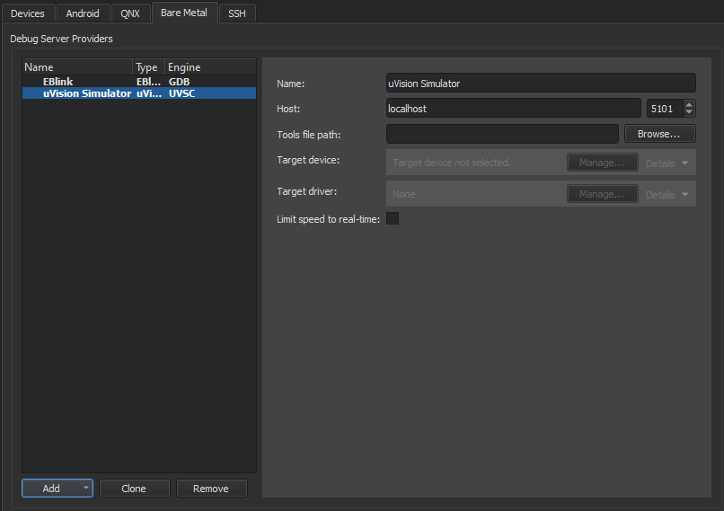
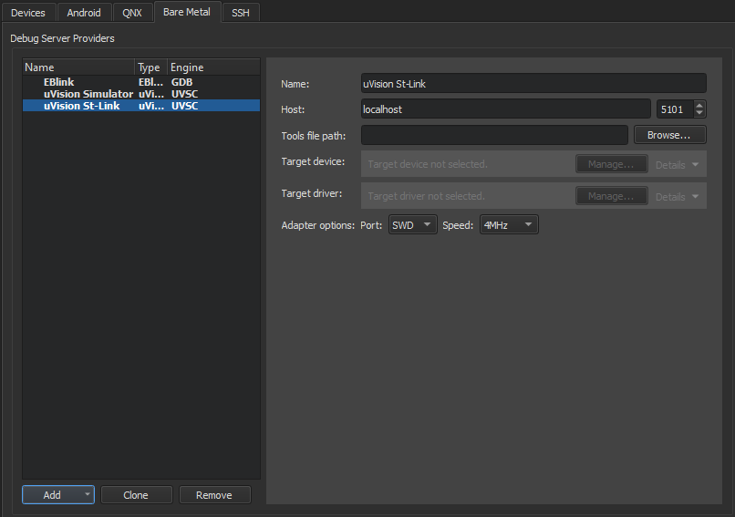
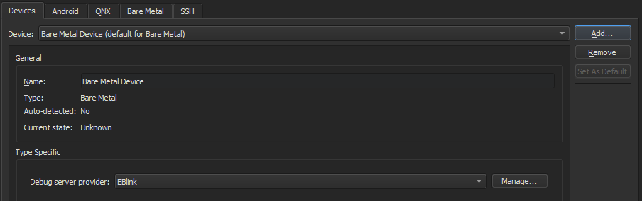
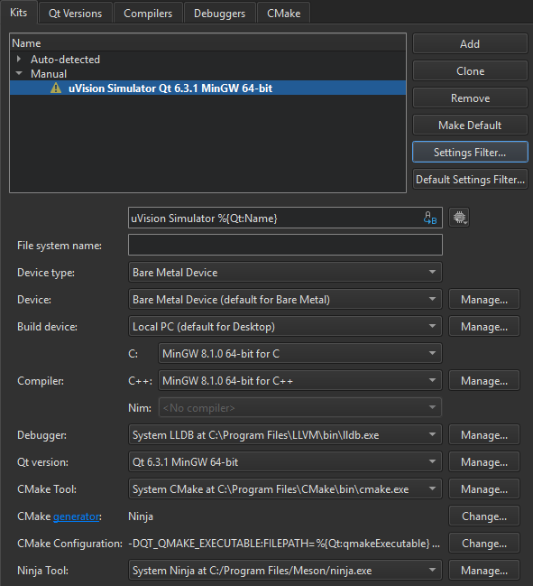

Connecting Bare Metal Devices
You can configure build and run kits to use Bare Metal tool chains installed on the development host to build applications for Bare Metal devices. You can connect the devices to the development host to run and debug applications on them from Qt Creator using GDB or a hardware debugger. This enables you to debug on small devices that are not supported by the generic remote Linux device plugin.
Note: If you use qmake to build the project and the device does not have Qt libraries, you need a fake Qt installation.
The following tool chains are supported for building applications:
- GCC: Microchip Technology (AVR, AVR32, PIC16, PIC32), NXP Semiconductors (ColdFire, M68K), Texas Instruments (MSP430), National Semiconductor (CR16C), Renesas Electronics (M32R, M32C, RL78, RX, SuperH, V850), Tensilica XTENSA (ESP8266, ESP32), RISC-V, Arm
- IAR EW: Microchip Technology (AVR, AVR32), NXP Semiconductors (ColdFire, M68K), Texas Instruments (MSP430), National Semiconductor (CR16C), Renesas Electronics (78K, M16/R8C, M32C, R32C, RH850, RL78, RX, SuperH, V850), STMicroelectronics (STM8), 8051, RISC-V, Arm
- Keil: Arm, C51 (8051), C251 (80251), C166 (C16x, XC16x)
- SDCC: STMicroelectronics (STM8), 8051
The bare metal device type accepts custom GDB commands that you specify in the device preferences. You can specify the commands to execute when connecting using a particular debug server provider.
The following debug server providers are supported when using GDB:
ST-Link and J-Link debug server providers can be used together with the uVision IDE.
Note: Enable the Bare Metal plugin to use it.
Specifying Settings for Debug Server Providers
To create connections to bare metal devices using a debug server provider, select Preferences > Devices > Bare Metal > Add.
The available settings depend on the debug server provider.
EBlink
EBlink is an ARM Cortex-M debug tool that supports squirrel scripting, live variables, and hot-plugging.

To specify settings for EBlink:
- In the Name field, enter a name for the connection.
- In the Startup mode field, select the mode to start the debug server provider in.
- In the Peripheral description file field, specify a path to a file that describes the peripherals on the device.
- In the Host field, select the host name and port number to connect to the debug server provider.
- In the Executable file field, enter the path to the debug server provider executable.
- In the Script file field, enter the path to a device script file.
- In the Verbosity level field, enter the level of verbose logging.
- Select the Connect under reset check box to use the ST-Link interface. Deselect the check box for hot-plugging.
- In the Type field, select the interface type.
- In the Speed field, enter the interface speed between 120 and 8000 kilohertz (kHz).
- Select the Disable cache check box to disable the EBlink flash cache.
- Select the Auto shutdown check box to automatically shut down the EBlink server after disconnecting.
- In the Init commands field, enter the commands to execute when initializing the connection.
- In the Reset commands field, enter the commands to execute when resetting the connection.
- Select Apply to add the debug server provider.
J-Link
J-Link is a line of debug probes by Segger.

To specify settings for J-Link debug probes:
- In the Name field, enter a name for the connection.
- In the Startup mode field, select the mode to start the debug server provider in.
- In the Peripheral description file field, specify a path to a file that describes the peripherals on the device.
- In the Host field, select the host name and port number to connect to the debug server provider.
- In the Executable file field, enter the path to the debug server provider executable.
- In the Host interface field, select the connection type, IP or USB, or use the default connection.
- In the Target interface field, select the target interface type.
- In the Speed field, enter the interface speed in kHz.
- In the Device field, select the device to connect to.
- In the Additional arguments field, enter arguments for the commands.
- In the Init commands field, enter the commands to execute when initializing the connection.
- In the Reset commands field, enter the commands to execute when resetting the connection.
- Select Apply to add the debug server provider.
OpenOCD
OpenOCD (Open On-Chip Debugger) is an on-chip debug solution for targets based on the ARM7 and ARM9 family with Embedded-ICE (JTAG) facility. It enables source level debugging with the GDB compiled for the ARM architecture.

To specify settings for OpenOCD:
- In the Name field, enter a name for the connection.
- In the Startup mode field, select the mode to start the debug server provider in.
- In the Peripheral description file field, specify a path to a file that describes the peripherals on the device.
- In the Host field, select the host name and port number to connect to the debug server provider.
- In the Executable file field, enter the path to the debug server provider executable.
- In the Root scripts directory field, enter the path to the directory that has configuration scripts.
- In the Configuration file field, enter the path to the device configuration file.
- In the Additional arguments field, enter arguments for the commands.
- In the Init commands field, enter the commands to execute when initializing the connection.
- In the Reset commands field, enter the commands to execute when resetting the connection.
- Select Apply to add the debug server provider.
St-Link
ST-LINK Utility is used for programming STM32 microcontrollers.

To specify settings for St-Link:
- In the Name field, enter a name for the connection.
- In the Startup mode field, select the mode to start the debug server provider in.
- In the Peripheral description file field, specify a path to a file that describes the peripherals on the device.
- In the Host field, select the host name and port number to connect to the debug server provider.
- In the Executable file field, enter the path to the debug server provider executable.
- In the Verbosity level field, enter the level of verbose logging.
- Select the Extended mode check box to continue listening for connection requests after the connection is closed.
- Select the Reset on connection check box to reset the board when the connection is created.
- In the Version field, select the transport layer type supported by the device.
- In the Init commands field, enter the commands to execute when initializing the connection.
- In the Reset commands field, enter the commands to execute when resetting the connection.
- Select Apply to add the debug server provider.
uVision IDE
uVision is an IDE for developing applications for embedded devices. Applications can be debugged by using uVision Simulator or directly on hardware by using St-Link and J-Link.
You can view the current state of peripheral registers in the Peripheral Registers view in Debug mode. The view is hidden by default.
uVision Simulator

To specify settings for uVision Simulator:
- In the Name field, enter a name for the connection.
- In the Host field, select the host name and port number to connect to the debug server provider.
- In the Tools file path field, enter the path to the Keil toolset configuration file.
- In the Target device field, select the device to debug.
- In the Target driver field, select the driver for connecting to the target device.
- Select the Limit speed to real-time check box to limit the connection speed.
- Select Apply to add the debug server provider.
uVision St-Link or JLink Debugger

To specify settings for uVision St-Link or JLink Debugger:
- In the Name field, enter a name for the connection.
- In the Host field, select the host name and port number to connect to the debug server provider.
- In the Tools file path field, enter the path to the Keil toolset configuration file.
- In the Target device field, select the device to debug.
- In the Target driver field, select the driver for connecting to the target device.
- In the Adapter options field specify the adapter interface type and speed in MHz.
- Select Apply to add the debug server provider.
Adding Bare Metal Devices

To add a bare metal device:
- Select Preferences > Devices > Add > Bare Metal Device > Start Wizard.
- In the Debug server provider field, select a debug server provider.
- Select Apply to add the device.
Building for and Running on Bare Metal Devices
To add a kit for building applications and running them on bare metal devices, select Preferences > Kits > Add. For more information, see Add kits.

You can build applications for and run them on bare metal devices in the same way as for and on the desktop. For more information, see Build for many platforms and Run on many platforms.
See also Enable and disable plugins.